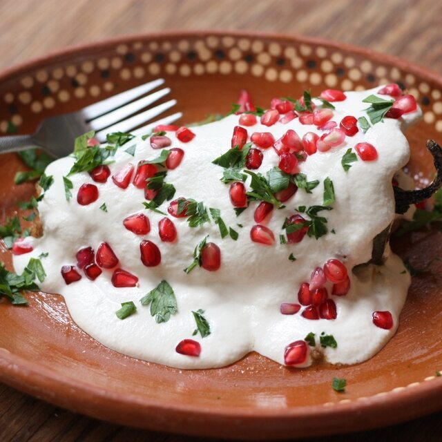

MITOS Y REALIDADES
ACONTECIMIENTOS MEMORABLES DEL MES DE SEPTIEMBRE

Respuesta: Históricamente, el Grito ocurrió durante la madrugada del 16 de septiembre de 1810 (alrededor de las 5:00 a.m.). La tradición de celebrarlo la noche del 15 se popularizó durante el mandato de Porfirio Díaz, quien hizo coincidir la fiesta patriótica con el día de su cumpleaños.
Respuesta: Juan José de los Reyes Martínez ("El Pípila") se convirtió en un símbolo legendario. Los historiadores señalan que su figura representa el valor colectivo de los mineros de Guanajuato en la toma de la Alhóndiga de Granaditas, más que un solo individuo actuando de forma aislada.
Respuesta: No. Quien realmente repicó la campana de la parroquia para llamar al pueblo fue José Galván, el campanero oficial del templo, bajo las órdenes del cura Miguel Hidalgo.
Dato Curioso: Este famoso platillo fue ideado por las monjas agustinas del convento de Santa Mónica en Puebla para celebrar la firma de los Tratados de Córdoba y homenajear a Agustín de Iturbide, usando los colores de la bandera trigarante (verde del perejil, blanco de la nogada y rojo de la granada).